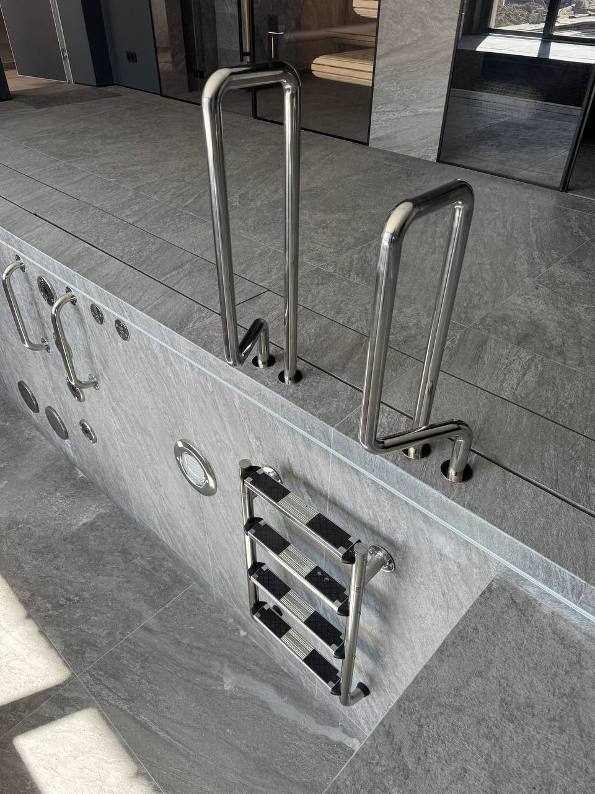

Введение
Бассейн в доме: что заложить в проект заранее
Крытый бассейн влияет не только на планировку помещения. Вода испаряется, повышая влажностную нагрузку на воздух и ограждающие конструкции; чаша и оборудование требуют места, инженерных подключений и доступа для обслуживания. Поэтому место бассейна и основные инженерные решения лучше согласовать с архитектором и профильными проектировщиками до того, как конструкция дома и отделка уже определены.
Сначала зафиксируйте сценарий: кто и как часто будет плавать, нужна ли спортивная дорожка или зона отдыха, как бассейн связан с жилыми комнатами и террасой. От этих решений зависят размеры чаши, обход, тепловой режим и состав инженерных систем. Подробный разбор выбора формата бассейна для дома приведён в отдельной статье о выборе бассейна; здесь речь о координации крытой чаши с самим домом.
Критерии
Четыре проектных вопроса для крытого бассейна
Четыре решения сильнее всего влияют на конструкцию дома и ежедневный комфорт. Их нужно обсуждать одновременно: изменения в одном разделе могут потребовать пересмотра остальных.
Вентиляция и осушение
С открытой поверхности воды постоянно испаряется влага. Способ её удаления и распределение воздуха выбирают расчётом для помещения и режима использования; бытовой осушитель нельзя считать готовым решением для любого бассейна. Обсудите с проектировщиком воздухообмен, осушение, подогрев и направление подачи воздуха как связанную систему.
Защита конструкций от влаги
Водяной пар может конденсироваться на холодных поверхностях или внутри ограждающей конструкции. Утепление, пароизоляционный слой и герметичность стыков и проходок должны быть согласованы между собой. Иначе влага способна накапливаться за отделкой, где проблему заметят не сразу.
Тепловой контур и остекление
Окна, наружные стены и крыша особенно чувствительны к температурным перепадам и влажности. Архитектору и инженерам важно согласовать теплотехнические решения с системой климат-контроля, а не выбирать остекление только по внешнему виду. Значения для расчёта микроклимата зависят от проекта и применимых требований.
Отделка и акустика
Влажная среда и химические аэрозоли предъявляют требования к отделочным материалам и деталям, которые соприкасаются с воздухом помещения. Твёрдые поверхности также отражают звук: покрытие, геометрию и расположение зон отдыха стоит оценивать вместе с архитектурой, а не после завершения работ.
Расчет
Получить расчет стоимости
Подготовим ориентир бюджета, состав работ и инженерные решения под ваш участок, дом и желаемый формат эксплуатации.

Инженерия
Почему бассейн нужно учитывать в расчёте дома
Вода, чаша, отделка и оборудование создают нагрузку на основание и несущие конструкции. Её должен оценить конструктор с учётом фактического решения, грунта, расположения чаши и этапов строительства. Простая оценка только по объёму воды не заменяет расчёт всей конструкции.
Для крытого помещения одновременно проектируют чашу, гидроизоляцию и защиту строительного контура от влаги. Важно не только выбрать материал, но и проработать примыкания, деформационные швы и проходки инженерных коммуникаций. О технологии чаши и гидроизоляционных узлах подробнее рассказывает материал о гидроизоляции бассейна.
Вентиляция и осушение связаны с температурой воды и воздуха, площадью открытой воды, накрытием и режимом использования. Ошибка в исходных данных влияет и на микроклимат, и на нагрузку на оборудование. СП 310.1325800.2017 регулирует проектирование бассейнов в пределах своей области применения; конкретную применимость требований к индивидуальному дому и текущую редакцию документа устанавливает проектировщик.
Необходимо заранее предусмотреть трассы трубопроводов, место технического оборудования и возможность вынести крупные узлы для ремонта. Требования к техническому помещению и сервисному доступу разобраны в отдельной статье. На странице о бассейне в доме эти вопросы важны как часть согласования архитектуры, а не как подбор конкретных моделей.
- Исходные данные владельца: сценарий купания, желаемые размеры и место бассейна, ограничения участка и дома.
- Расчёты проектировщиков: конструктивная схема чаши и здания, гидравлика, климатическая система и защита от влаги.
- Узлы и доступ: проходки, примыкания, трассы, техническая зона, возможность обслуживания и замены оборудования.
Проект
Обсудить проект бассейна
Разберем план участка, архитектуру дома, сроки и желаемый уровень автоматизации, чтобы предложить решение без визуальных и технических компромиссов.
Этапы
Что согласовать до начала строительных работ
До начала работ у владельца должен быть согласованный комплект решений, а не только визуализация чаши. Он позволяет понять, какие системы влияют на конструкции и отделку, и кто отвечает за стыки между разделами проекта.
Проверьте, что размеры и отметки чаши согласованы с архитектурой и конструктивной схемой; водоподготовка — с местом технического помещения; а климатические решения — с ограждающими конструкциями и остеклением.
- 01
План и разрез помещения
Перечень на чертеже должен связывать геометрию чаши, отметки воды, обходные зоны и строительные конструкции: эти данные нужны архитектору и конструктору до начала работ.
- 02
Конструктивная схема
- 03
Водоподготовка и техническая зона
- 04
Климатический расчёт
- 05
Отделка, узлы и доступ
Рекомендации
С чего начать владельцу
Соберите план дома или помещения, желаемые размеры чаши, сценарий эксплуатации и известные ограничения участка. На этой основе архитекторы и инженеры смогут проверить, где бассейн разместить, какие разделы проекта затронуты и какие исходные данные ещё нужно получить.
Попросите показать не только визуальную концепцию, но и согласование конструкций, гидроизоляции, водоподготовки, вентиляции и доступа для обслуживания. Такой набор позволяет сравнивать предложения по одинаковым исходным условиям, не подменяя техническое решение обещанием красивого результата.
Консультация
Заказать консультацию
Ответим на вопросы, оценим исходные данные и предложим следующий шаг: концепцию, выезд специалиста или предварительный расчет.